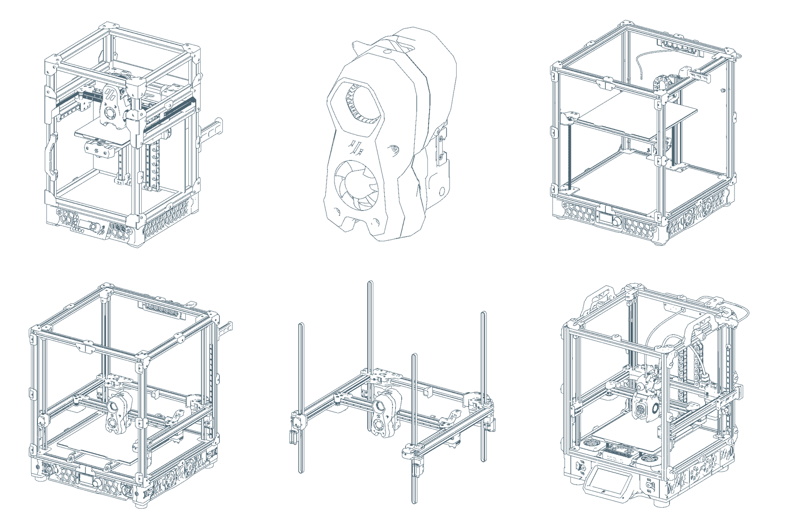

背景の線画は、登録済みCADのメッシュを正投影し、隠線処理して出力しています。形状の描き起こしや生成補完は行っていません。透明パネルを非表示にし、部品図では指定したアセンブリだけを表示しています。
The background contains orthographic, hidden-line renders of the actual catalog meshes. Transparent panels are hidden. The toolhead and gantry drawings isolate their original assembly groups. Geometry and relative part placements are preserved; drawings use individual camera scales.

Derived drawings retain GPL-3.0 and the original component credits. These decorative source-pose drawings are not manufacturing drawings or clearance validation.
Drawing manifest, hashes and assembly selections · Exact input mesh bundle · Reproduction scripts
Rendered with Blender Freestyle. The viewer loads only this static image, without extra model downloads.